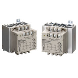
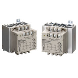
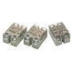

Building Automation
Industrial Automation
Power Automation & Safety


Bangladesh Distributor
Solid-state Relays
No-contact relays that semiconductor is utilized, which enables high-speed and high-frequency operation. OMRON provides Solid-state Relay for enormous range of applications.
| Overview | Features |
| Principles |
|
| Engineering Data |
|
What Are SSRs?
Difference between SSRs and Mechanical Relays
SSRs (Solid State Relays) have no movable contacts. SSRs are not very different in operation from mechanical Relays that have movable contacts. SSRs,however, employ semiconductor switching elements, such as thyristors, triacs, diodes, and transistors.Furthermore, SSRs employ optical semiconductors called photocouplers to isolate input and output signals. Photocouplers change electric signals into optical signals and relay the signals through space,thus fully isolating the input and output sections while relaying the signals at high speed.
SSRs consist of electronic parts with no mechanical contacts.Therefore, SSRs have a variety of features that mechanical relays do not incorporate. The greatest feature of SSRs is that SSRs do not use switching contacts that will physically wear out.
SSRs are ideal for a wide range of applications due to the following performance characteristics.
・ They provide high-speed, high-frequency switching operations.
・ They have no contact failures.
・ They generate little noise.
・ They have no operation noise.
Configuration of SSRs
SSRs (Representative Example of Switching for AC Loads)
Electromagnetic Relay (EMR)
An EMR generates electromagnetic force when input voltage is applied to the coil. The electromagnetic force moves the armature that switches the contacts in synchronization. EMRs are not only mounted to control panels, but also used for a wide range of applications. The principle of the operation of EMRs is simple and it is possible to manufacture EMRs at low costs.
Control of SSRs (ON/OFF Control,Cycle Control, Optimum Cycle Control,Phase Control)
ON/OFF control is a form of control where a heater is turned ON or OFF by turning an SSR ON or OFF in response to voltage output signals from a Temperature Controller. The same kind of control is also possible with an electromagnetic relay but if control where the heater is turned ON and OFF at intervals of a few seconds over a period of several years, then an SSR must be used.
With cycle control (G32A-EA), output voltage is turned ON/OFF at a fixed interval of 0.2 s. Control is performed in response to current output from a Temperature Controller in the range 4 to 20 mA.
The basic principle used for optimum cycle control is zero cross control, which determines the ON/OFF status each half cycle. A waveform that accurately matches the average output time is output.The accuracy of the zero cross function is the same as for conventionally zero cross control. With conventional zero cross control, however, the output remains ON continuously for a specific period of time, whereas with optimum cycle control, the ON/OFF status is determined each cycle to improve output accuracy.
ON/OFF Control
Enables low-cost, noiseless operation without maintenance requirements.
Cycle Control
Enables noiseless operation with high-speed response.
Optimum Cycle Control (High-accuracy Zero Cross Control)
Many heaters can be control using communications.Enables noiseless operation with high-speed response.
Phase Control (Single Phase)
Enables precise temperature control and increases the heater's service life.
Precaution for Cycle Control and Optimum Cycle Control
With cycle control, inrush current flows five times every second (because the control cycle is 0.2 s). With a transformer load, the following problems may occur due to the large inrush current (approximately 10 times the rated current), and controlling the power at the transformer primary side may not be possible.
1. The SSR may be destroyed if there is not sufficient leeway in the SSR rating.
2. The breaker on the load circuit may be tripped.
With phase control, output is changed every half-cycle in response to current output signals in the range 4 to 20 mA from a Temperature Controller. Using this form of control, high-precision temperature control is possible, and is used widely with semiconductor equipment.
Configuration and Operating Principle of MOS FET Relays
MOS FET relays are SSRs that use power MOS FETs in output elements. In order to operate the power MOS FETs, photodiode arrays are used as light-receiving elements. When current flows into the input terminal, the LED lights. This light generates a photoelectromotive force in the photodiode array, and this acts as a gate voltage that turns ON the power MOS FET. By connecting 2 power MOS FETs using a source common, control of AC loads is possible. There are models for control of DC loads, which have just one power MOS FET.
There is no varistor in the G3VM MOS FET relay for signalling.
MOS FET Relay Names
This type of product has a relatively short history, and companies use a variety of names and brands. The following table shows examples for signals (equivalent to the G3VM).
| Manufacturer | Name in catalog |
| Toshiba | Photo Relay |
| Matsushita Electric Works | Photo MOS Relay |
| NEC | MOSFET Relay |
| OKI Electric Industry | Photo MOS Switch |
| Okita Works | Photo DMOS-FET Relay |
| HP | Solid-state Relay |
| OMRON | MOS FET Relay |
Recommended Products
 G3J-T
G3J-T
Soft-start/stop Function Starts and Stops Three-phase Motors Smoothly and Economically
G3NA
Wide Lineup of General-purpose Solid State Relays with Applicable Loads of 5 to 90 A
G3PE (Three-phase)
Compact, Slim-profile SSRs with Heat Sinks. Solid State Contactors for Three-phase Heaters Reduced Installation Work with DIN Track Mounting.